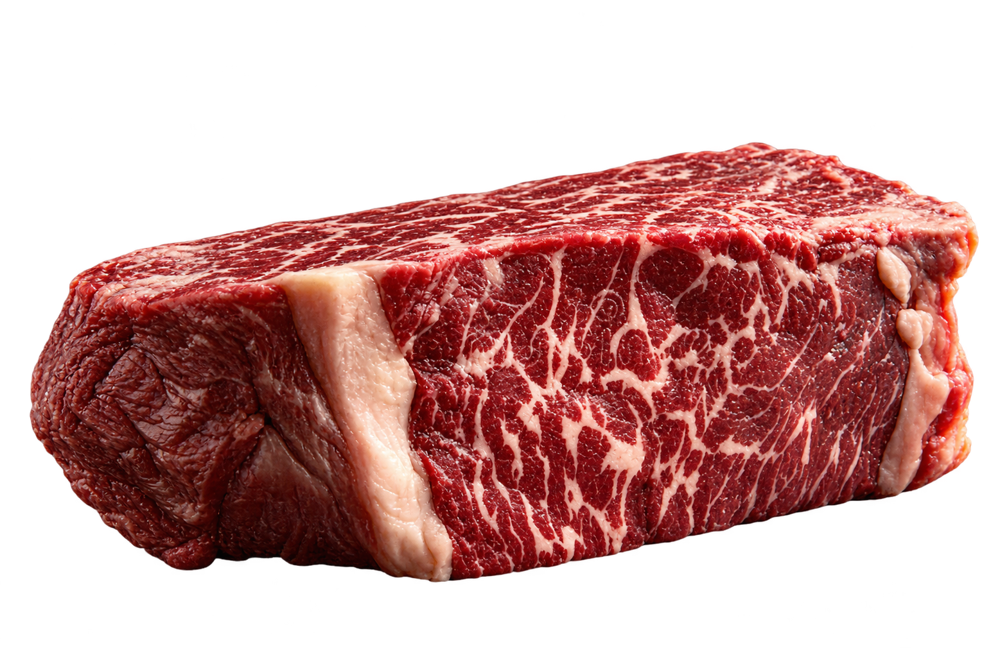

Barra de navegação:
GORDURA ANIMAL É BOM PARA A SAÚDE SIM!
• Argumento 1:Energia de verdade. "A gordura natural das carnes é uma fonte de energia densa e limpa que o corpo humano usa desde a época das cavernas,
muito antes de inventarem o óleo de soja."
• Argumento 2:• Amiga dos Hormônios. "As gorduras saturadas naturais e o colesterol bom servem como base para a produção de hormônios essenciais no nosso corpo.
Cortar totalmente a gordura da carne pode te deixar sem energia e com o humor péssimo."
Argumento 3::• O Sabor é Fundamental. "O famoso 'marmoreio', que é aquela gordura entremeada na carne, é o responsável por dar a maciez e o sabor único ao churrasco.
Comer carne totalmente sem gordura devia ser considerado um crime contra a gastronomia."